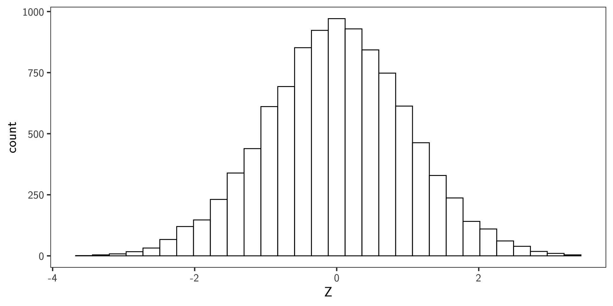
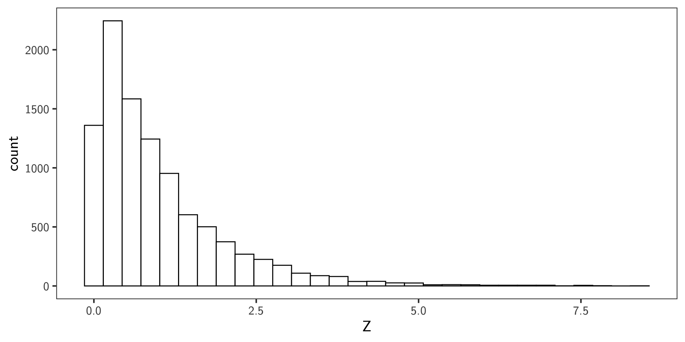
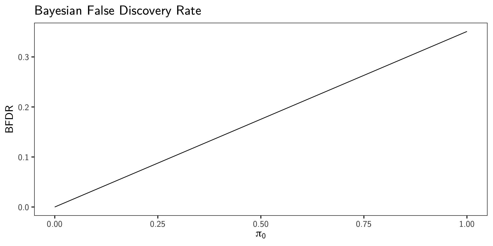
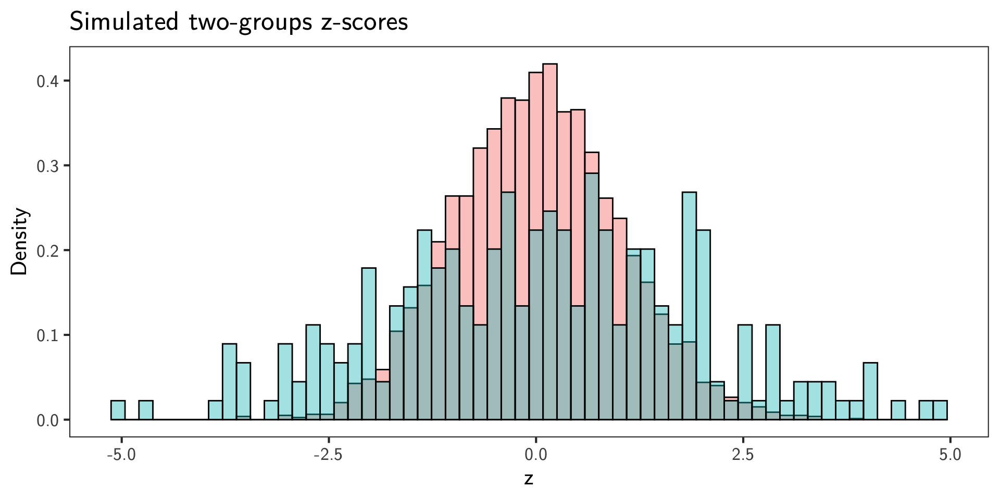
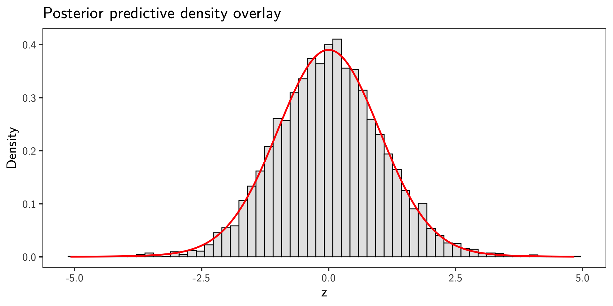
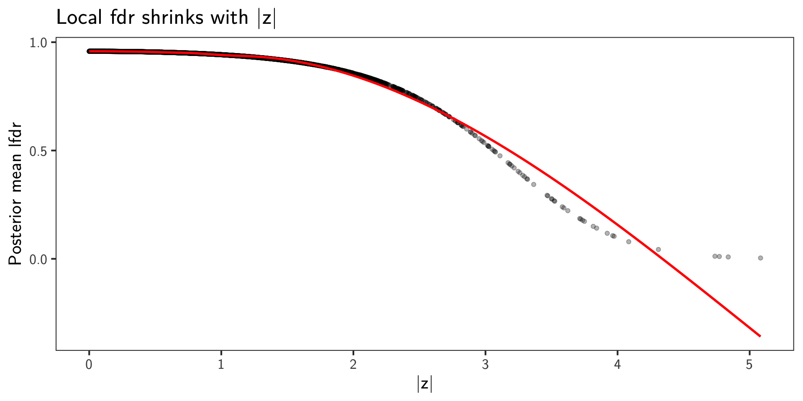

Lecture 07: False Discovery Rates
PUBH 8878, Statistical Genetics
Problem Set-up
Consider a GWAS where \(m\) SNPs are tested for association with a trait of interest
For SNP \(i\) , Let \(\delta\) be a unobserved random variable where
\[
\delta_i =
\begin{cases}
0 \text{ if the i'th hypothesis is a true null} \\
1 \text{ if the alternative is true}
\end{cases}
\]
Based on some rule, we observe \(r_i\) , where
\[
r_i =
\begin{cases}
0 \text{ if we fail to reject the i'th hypothesis} \\
1 \text{ if we reject the i'th hypothesis}
\end{cases}
\]
Problem Set-up
For each SNP, given our data, we compute a test statistic \(z_i\)
We will reject hypothesis \(i\) if \(z_i \in A\) , where \(A\) is some rejection region
Let \(R\) be the total number of rejections, where \(R = \sum_{i=1}^m r_i\)
Let \(T, V\) be the total number of true and false discoveries respectively, where
\[
T = \sum_{i=1}^m r_i \delta_i, \qquad V = \sum_{i=1}^m r_i (1-\delta_i)
\]
The Family Wise Error Rate (FWER) is the probably that we have at least one false discovery, or \(\text{Pr}(V \geq 1)\)
The False Discovery Proportion is \(Q = \frac{V}{R}\) , where \(Q=0\) if \(R=0\)
Problem Set-up
Note that \(Q\) is not observable!
\(V\) is unknown as \(\delta\) is unobservableThere exist a variety of methods to estimate \(Q\)
Two Preliminaries
Distribution of \(p\) -values
Generating a Random Variable with a desired distribution
Distribution of \(p\) -values
Let \(X \in \mathbb{R}\) be a random variable with pdf \(f_X(x) = \frac{d}{dx}F(x)\)
Let \(y = F(x)\) such that \(x = F^{-1}(y)\)
Via theory of transformations, we achieve for \(y \in (0, 1)\)
\[
f_Y(y) = f_X\left(F^{-1}(y)\right)\left| \frac{dF^{-1}(y)}{dy}\right|
\]
Let \(x = F^{-1}(y)\) . Then, \(y = F(x)\) , and,
\[\begin{align*}
\left| \frac{dF^{-1}(y)}{dy}\right| =
\frac{dx}{dF(x)} =
\frac{dx}{f_X(x) dx} =
\frac{1}{f_X(x)} =
\frac{1}{f_X(F^{-1}(y))}
\end{align*}\]
Which means \(f_Y(y) = 1\) for \(y \in (0, 1)\) , which is the standard uniform distribution
Generating Random Variables
To generate a random variable with the desired distribution \(F\) , we use the following algorithm:
Generate \(U \sim \text{Uniform}(0, 1)\)
Set \(X = F_X^{-1}(U)\)
Generating Random Variables
Let our desired random variable have the standard normal distribution.
<- runif (10000 )<- qnorm (U)

Generating Random Variables
<- runif (10000 )<- qexp (U)

Benjamini-Hochberg False Discovery Rate (BH)
Let FDR-BH be the expected value of FDP
\[\begin{align*}
\text{FDR}
&= \text{E}\left[Q\right] \\
&= \text{E}\left[\frac{V}{R} \Big| R > 0\right] \text{Pr}(R > 0)
\end{align*}\]
Let \(r_q\) be a value that controls the FDR at level \(q \in (0, 1)\) if
\[
\text{FDR}(r_q) < q
\]
Benjamini-Hochberg False Discovery Rate (BH)
Decision rule:
Consider an ordered set of \(p\) -values: \(\{p_i | i = 1, 2, ..., m\}\) , where \(p_i \leq p_{i+1}\)
Let \(r_q = \text{max}\{i: p_i \leq (i/m)q\}\)
Then, let our rejection set be \(\{H_i\ \, | \, i \in (0, r_q)\}\)
Benjamini-Hochberg False Discovery Rate (BH)
Another method:
Let \(k = \max\left\{i: p_i \leq \frac{i}{m}q\right\}\)
Construct \(q_i^* = q(p_i) = \min_{i \leq k}\left(p_k \frac{m}{k}\right)\)
Reject \(H_i\) if \(q_i^* \leq q\)
Bayesian FDR
Let H be a binary random variable that takes the value 0 when a hypothesis is null, and 1 when a hypothesis is non-null
Let \(m\) be the number of total hypotheses, \(m_0\) be the number of null, and \(m - m_0\) be the number of non-null
\(\text{Pr}(H = 0) = \frac{m_0}{m} := \pi_0\) \(\text{Pr}(H = 1) = \frac{m - m_0}{m} = 1 - \pi_0 := \pi_1\) \(\pi_0\) is the a priori probability of null for each hypothesisIn GWAS, \(\pi_0 >> \pi_1\)
Assume that \(H \sim \text{Bernoulli}(\pi_i)\)
Bayesian FDR
Our observed test statistics then have the marginal distribution
\[
p(z) = \text{Pr}(z | H = 0)\pi_0 + \text{Pr}(z | H = 1)\pi_1
\]
Given a fixed rejection region \(A\) , we denote its probability under the null or marginal marginal distributions as
\[
F_0(A) = \text{Pr}(Z \in A | H_0) = \int_A p_0(z)dz
\]
\[
F(A) = \text{Pr}(Z \in A) = \int_A p(z)dz
\]
Bayesian FDR
Define the probability of a false discovery as
\[\begin{align*}
\text{BFDR}(A)
&= \text{Pr}(H = 0 | z \in A) \\[.5em]
&= \frac{\text{Pr}(z \in A |H = 0) \text{Pr}(H = 0)}{\text{Pr}(Z \in A)} \\[.5em]
&= \frac{F_0(A)\pi_0}{F(A)}
\end{align*}\]
Expected proportion of the false discoveries among all features considered significant
How to compute BFDR?
Note that to compute BFDR, we require knowledge of
\(\pi_0\) , the a priori probability of a null hypothesis\(F_0\) \(F\)
Empirical bayes approach: estimate these quantities from the data, and then approximate the BFDR
Empirical Bayes Estimation
Consider that we have the results of a \(t\) -test for each of the \(m\) genes
Assume \(F_0\) to be the standard normal distribution by transforming the \(p\) -values into \(z\) -values, set \(\pi_0\) to 1, and estimate \(F\) via:
\[\begin{align*}
F(A) = \text{Pr}(Z \in A) &= \int_A p(z)dz \\
&= \int_{-\infty}^{\infty} I(z \in A)p(z)dz \\
&= \text{E}[I(z \in A)]
\end{align*}\]
Which we empirically estimate via
\[
\hat{F}(A) = \hat{\text{Pr}}(Z \in A) = \frac{1}{m}\sum_{i=1}^m I(z_i \in A)
\]
Empirical Bayes Estimation
Plugging that result in our empirical Bayes estimator, we achieve:
\[
\hat{BFDR}(A) = \frac{\hat{pi}_0 F_0(A)}{\hat{F}(A)}
\]
Posterior probability of false discoveries among the features whose \(z\) -values fall in the rejection region \(A\)
Using \(p\) -values as data
If we set a threshold \(p_t\) , where \(p_i \leq p_t \implies p_i \textsf{ is significant}\) , we can then write
\[
F_0(p_t) = \text{Pr}(P_i \leq p_t \, |\, H_i = 0) = \int_0^{p_t} \text{Unif}(0, 1) = p_t
\]
\[
F(p_t) = \text{Pr}(P \leq p_t)
\]
\[
\hat{F}(p_t) = \hat{\text{Pr}}(P \leq p_t) = \frac{1}{m}\sum_{i=1}^m I(p_i \leq p_t)
\]
and then estimate BFDR via
\[
\hat{BFDR}(p_t) = \frac{\hat{\pi}_0 p_t}{\frac{1}{m}\sum_{i=1}^m I(p_i \leq p_t)}
\]
Example
<- 10000 # mixture of null and alternative p-values <- c (runif (snps * 0.9 ), runif (snps * 0.1 , 0 , 0.01 ))<- 0.05 <- p_values <= p_t<- seq (0 , 1 , length.out = 100 )<- (pi_0 * p_t) / mean (significant)ggplot (data.frame (pi_0, bfdr), aes (x = pi_0, y = bfdr)) + geom_line () + labs (x = expression (pi[0 ]), y = "BFDR" , title = "Bayesian False Discovery Rate" )

Local False Discovery Rates
Note that FDR-BH and BFDR are interested in identifying a discovery set
Instead, consider the probability of a false positive for a specific SNP \(j\) given that we observed \(y_j\) :
\[\begin{align*}
\text{fdr}(y_j)
&= \text{Pr}(H_j = 0 \, | \, y_j) \\[.5em]
&= \frac{p_0(y_j \, | \, H_j = 0) \pi_0}{p(y_j)} \qquad \textsf{(via Bayes' theorem)}\\[.5em]
&= \frac{p_0(y_j \, | \, H_j = 0) \pi_0}{p_0(y_j \, | \, H_j = 0)\pi_0 + p_1(y_j \, | \, H_j = 1)(1 - \pi_0)}
\end{align*}\]
Given \(z\) -values, \(p_0 = \phi(y_j)\) , \(\pi_0 := 1\)
The denominator can be estimated using MLE or MCMC
\(q\) -values\[
q(t) = \min_{\{A:t\in A\}}\left[pBFDR(A)\right]
\]
More intuitively, the \(q\) -value is the smallest pBFDR over all regions that reject \(H_i\)
Expected proportion of false positives among all features as or more extreme than the one observed
Empirical bayes estimate: \(q_i = q_i^* \hat{\pi}_0\)
If the prior probability a randomly chosen hypothesis is null is 1, then the two values above are equal
\(q\) -values vs \(\alpha\) -values
\(\alpha\) -value = \(\text{Pr}(\textsf{Test Positive} | H_0) =\) False positive rate\(q\) -value = \(\text{Pr}(H_0 | \textsf{Test Positive}) =\) False discovery rate\(q = .05 \implies\) “An estimated 5% of the results in the discovery set are false discoveries”\(\alpha = .05 \implies\) “An estimated 5% of all the tests performed are false discoveries”
qvalue package in R
Fully Bayesian FDR
We observe test statistics \(Z_1,\dots,Z_m\) (e.g., GWAS \(z\) ‑scores) and introduce latent indicators \(H_i\in\{0,1\}\) with \[
H_i=0 \text{ (null)},\quad H_i=1 \text{ (non‑null)}
\] \[
\Pr(H_i=0)=\pi_0,\ \Pr(H_i=1)=1-\pi_0.
\]
Fully Bayesian FDR
Likelihood (symmetric, zero‑mean alternative):
\[\begin{align*}
&Z_i \mid H_i=0 \sim \mathcal N(0,\tau^2) \\[.5em]
&Z_i \mid H_i=1 \sim \mathcal N(0,\sigma^2)
\end{align*}\]
(Allow \(\tau\neq 1\) to capture empirical‑null inflation/deflation.)
Fully Bayesian FDR
Priors (GWAS‑motivated):
\[\begin{align*}
&\pi_0 \sim \mathrm{Beta}(20,1) \\
&\sigma \sim \mathrm{LogNormal}(0,0.5^2) \\
&\tau \sim \mathrm{LogNormal}(0,0.05^2)
\end{align*}\]
Fully Bayesian FDR
Posterior over parameters \(\theta=(\pi_0,\sigma,\tau)\) : \[
p(\theta\mid \mathbf z)\ \propto\ p(\theta)\ \prod_{i=1}^m\Big[\pi_0\,\phi_{\tau}(z_i) + (1-\pi_0)\,\phi_{\sigma}(z_i)\Big],
\] with \(\phi_s\) the \(\mathcal N(0,s^2)\) pdf.
Fully Bayesian FDR
Local false discovery rate (per feature), integrating parameter uncertainty: \[
\operatorname{lfdr}_i
=\Pr(H_i=0\mid z_i,\mathbf z)
=\mathbb E_{\theta\mid\mathbf z}\!\left[
\frac{\pi_0\,\phi_{\tau}(z_i)}
{\pi_0\,\phi_{\tau}(z_i)+(1-\pi_0)\,\phi_{\sigma}(z_i)}
\right].
\]
Fully Bayesian FDR
Let a rejection rule be \(r_i(t)=\mathbf 1\{|z_i|\ge z_t\}\) where \(z_t=\Phi^{-1}(1-t/2)\) . Define \[
R(t)=\sum_i r_i(t),\quad V(t)=\sum_i r_i(t)\,(1-H_i),\quad \mathrm{FDP}(t)=\frac{V(t)}{\max(1,R(t))}.
\]
A fully Bayesian FDR at threshold \(t\) is the posterior expectation: \[
\boxed{\ \mathrm{FDR}(t)\ :=\ \mathbb E\!\left[\frac{V(t)}{\max(1,R(t))}\ \middle|\ \mathbf z\right]
\ \approx\ \frac{1}{S}\sum_{s=1}^S \frac{\sum_i r_i(t)\,\operatorname{lfdr}_i^{(s)} }{\max(1,\sum_i r_i(t))}\ },
\] where \(\operatorname{lfdr}_i^{(s)}\) is the null posterior probability at draw \(\theta^{(s)}\) .
Fully Bayesian FDR
Bayes‑optimal discovery set at level \(q\) .
Rank features by \(\widehat{\operatorname{lfdr}}_i=\mathbb E[\Pr(H_i=0\mid z_i,\theta)\mid \mathbf z]\)
Let \(\bar\ell(k)\) be the running mean of the first \(k\) lfdrs.
Choose \(\hat k=\max\{k:\bar\ell(k)\le q\}\) and take those \(\hat k\) features
This minimizes posterior expected false discoveries among all sets of size \(\hat k\) .
Simulate GWAS-like \(z\) -scores
1 <- 5000 <- 0.95 <- 1.8 <- 1 2 <- rbinom (m, 1 , 1 - pi0_true)3 <- numeric (m)4 == 0 ] <- rnorm (sum (H== 0 ), 0 , tau_true)== 1 ] <- rnorm (sum (H== 1 ), 0 , sigma_true)5 <- 2 * pnorm (- abs (z))
1
Choose parameters to control sparsity and scales.
2
Encode the unknown truth via latent indicators in a two-groups model: \(H_i \sim \mathrm{Bernoulli}(1-\pi_0)\) , so that on average \((1-\pi_0)m\) tests are non-null.
3
Impose directional neutrality for two-sided testing by using a zero-centered alternative (no global shift of effects).
4
Generate \(z\) -scores under the two-groups mixture. Null \(z\) -scores are centered at 0 with variance \(\tau^2\) ; non-null \(z\) -scores come from a zero-centered wider normal to induce heavy tails.
5
Map \(z\) -scores to two-sided \(p\) -values under the standard normal null (\(\tau=1\) ): \(p_i = 2\,\Phi(-|z_i|)\) .
Simulate GWAS-like \(z\) -scores

Bayesian Two-Groups Fit (Stan)
Model the marginal \(z\) -score density as a two-groups mixture:
\[
p(z_i \mid \theta) = \pi_0\, \varphi_{\tau}(z_i) + (1-\pi_0)\, \varphi_{\sigma}(z_i),
\]
where \(\varphi_{\sigma}(\cdot)\) is the \(\mathcal N(0,\sigma^2)\) pdf. Priors encode GWAS sparsity and standard-null assumptions:
\[
\pi_0 \sim \mathrm{Beta}(20,1),\quad \sigma \sim \mathrm{LogNormal}(0,0.5),\quad \tau \sim \mathrm{LogNormal}(0,0.05).
\]
This matches the lecture: \(\pi_0 \gg \pi_1\) (sparse signals) and a tight null around 1 while allowing mild inflation.
Posterior Summary
$ summary (c ("pi0" ,"sigma" ,"tau" )) |> select (1 : 7 ) |> :: kable ()
pi0
0.9299875
0.9345666
0.0313251
0.0280454
0.8676778
0.9703593
sigma
1.7883926
1.7657928
0.1873689
0.1780550
1.5202518
2.1319676
tau
0.9907577
0.9912889
0.0178861
0.0172593
0.9601886
1.0194893
\(\pi_0\) is the estimated proportion of nulls\(\sigma\) is the estimated standard deviation of the alternative (zero-centered)\(\tau\) is the estimated standard deviation of the null
Posterior Predictive Check
Posterior predictive density under parameters \(\theta=(\pi_0,\sigma,\tau)\) is
\[
p_\theta(z) = \pi_0\, \varphi_{\tau}(z) + (1-\pi_0)\, \varphi_{\sigma}(z).
\]
Overlay the posterior mean predictive density on the \(z\) histogram.

Posterior Local fdr
The local false discovery rate for SNP \(i\) is the posterior probability of null given \(z_i\) and parameters:
\[
\operatorname{lfdr}_i(\theta) = \Pr(H_i=0 \mid z_i,\theta) = \frac{\pi_0\,\varphi_{\tau}(z_i)}{\pi_0\,\varphi_{\tau}(z_i) + (1-\pi_0)\,\varphi_{\sigma}(z_i)}.
\]
Posterior Local fdr
Our Stan model returns lfdr in generated quantities. Compute posterior means \(\hat{\operatorname{lfdr}}_i\) and visualize.
`geom_smooth()` using method = 'gam' and formula = 'y ~ s(x, bs = "cs")'
